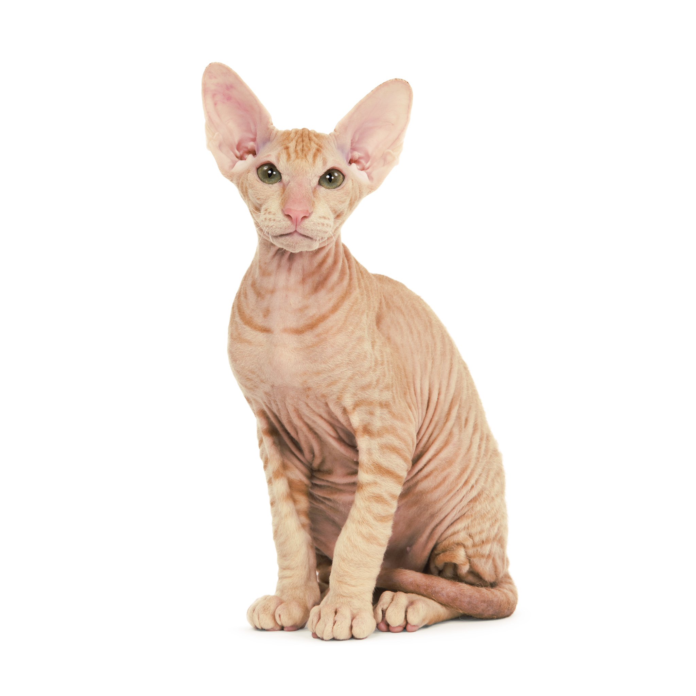

Петербургский сфинкс
Характеристика
| Образ жизни | В помещении |
| Тип шерсти | Беcшерстная |
| Размер | Средний-Крупный |
| Образ жизни | В помещении |
| Тип шерсти | Беcшерстная |
| Размер | Средний-Крупный |
Петербургский сфинкс – элегантный кот с уникальным шерстным покровом. Порода признана в трех разновидностях. Полностью бесшерстная, с шерстью замшевой текстуры и с более длинной, но редкой шерстью типа «велюр» (бархатистой или проволочной текстуры). Встречаются также различные комбинации всех трех типов. Это кошка среднего размера, по внешним характеристикам похожая на сиамскую, с удлиненными грациозными очертаниями.
Петербургские сфинксы – очень умные, жизнерадостные и активные по характеру кошки, сохраняющие игривость на протяжении всей жизни. Они крепко привязываются к людям, любят, когда их гладят и держат на руках, и терпеть не могут оставаться дома в одиночестве. По характеру петербургские сфинксы крайне общительны. Они охотно отзываются на голос, превосходно ладят с другими кошками (лучше всего – с другими ориентальными породами), собаками и детьми. Из-за высокой подвижности и некоторой резкости в играх с подростком они уживутся лучше, чем с маленьким ребенком.
Порода появилась в России, в санкт-петербургском клубе любителей кошек «Котофей». Сформировалась путем введения доминантного признака бесшерстности в генотип сиамских и ориентальных кошек. Основу ее составило потомство от вязки кота донского сфинкса Афиногена Миф с кошкой ориентальной породы по имени Радма фон Ягерхоф. Начало селекционной программе положила заводчица Ольга Миронова, добившаяся регистрации в Селекционной фелинологической федерации (SFF). Первый помет появился на свет в 1994 году, а в 1995-м порода получила признание в SFF под названием «Петерболд, или петербургский сфинкс». Несколько котят отправились в США, где в 2005 году порода с некоторыми изменениями в стандарте была признана международной ассоциацией TICA.